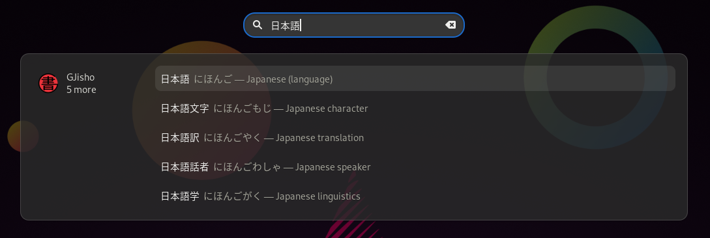
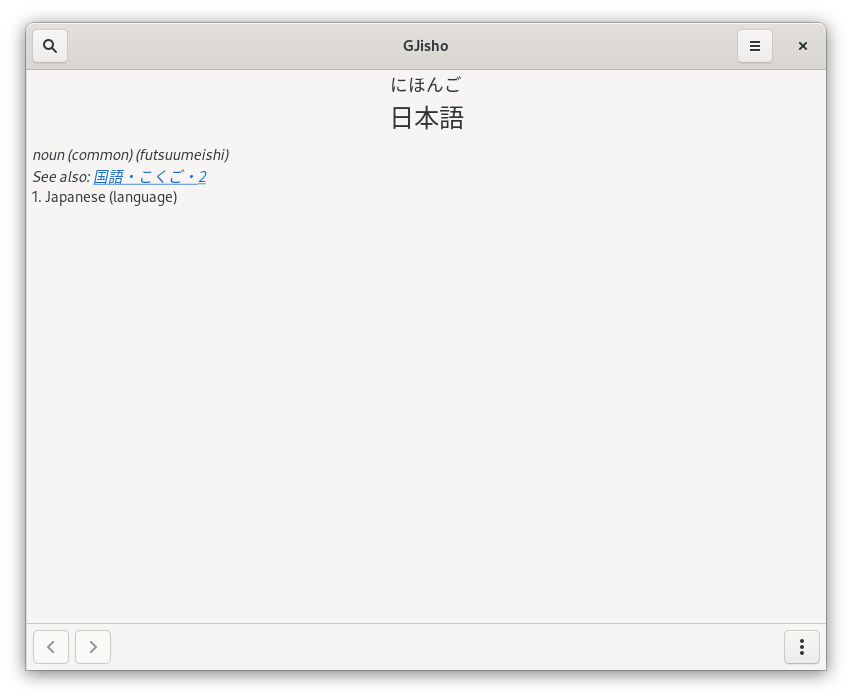

This article is the second in a pair of articles covering my experience using Go to develop a GNOME application. If you are interested in the motivation behind the project and the initial setup, see the first article.
One of the most useful features of the GNOME desktop is its integrated, universal search feature: from the "Activities" menu, which can be opened by pressing the Windows/Super key, typing anything will begin a search for applications, files, settings and more matching the input. This search feature is extensible: applications can register themselves as search providers so that GNOME will ask them for application-specific results matching the user's query.
For GJisho, a Japanese-English dictionary application, such a feature makes it very easy to look up a word quickly, without even having to open the application. For example, see the screenshot below, where I've searched for 日本語 using GNOME search:

If I click or press enter on one of the results, GJisho will open a window and navigate directly to the word, where I can get more details on its definition, kanji usage and examples:

This feature is so useful that I personally never open GJisho manually: I always open it through a search query, since it's built right into the desktop and very easy to access.
Implementing a GNOME search provider
The GNOME documentation for search providers gives an overview of what's needed to integrate search provider functionality into an application.
D-Bus activation
First, the application must be D-Bus activatable. D-Bus is a message bus system: it is a system that allows applications to communicate with each other. Applications that are D-Bus activatable implement a D-Bus interface that allows them to be "activated" through a D-Bus method. Usually, an application will implement this activation method by opening a new or existing window. What this means is that the application can be launched in the background as a service and then only show a window when it is activated through D-Bus (which GNOME will do when the user opens it in the "Activities" menu).
Fortunately, this behavior comes out of the box when using GtkApplication. In the previous article, I gave a snippet showing how this looks in Go:
func main() {
app, err := gtk.ApplicationNew("com.example.MyApp", glib.APPLICATION_FLAGS_NONE)
if err != nil {
log.Fatalf("Could not create application: %v", err)
}
// Standard GTK application signals for application startup.
// See https://wiki.gnome.org/HowDoI/GtkApplication
_, err = app.Connect("startup", onStartup, app)
if err != nil {
log.Fatalf("Could not connect startup signal: %v", err)
}
_, err = app.Connect("activate", onActivate, app)
if err != nil {
log.Fatalf("Could not connect activate signal: %v", err)
}
os.Exit(app.Run(os.Args))
}
func onStartup(app *gtk.Application) {
// Set up application resources, such as databases, here, but don't show
// any windows yet. This function may be called when the application is
// being launched through DBus activation (explained later in this article),
// such as when getting results for a GNOME search, where it may not be
// appropriate to show application windows.
}
func onActivate(app *gtk.Application) {
// Set up and show application GUI here.
}When the above program is run without any command-line arguments, its startup
signal will be fired, followed by its activate signal, which results in the
application opening and showing its window, as expected. However, when it is run
with the --gapplication-service flag, GTK will only fire the startup signal:
the activate signal will only be fired once the application is activated
through D-Bus. GTK also handles the D-Bus setup, connecting the application to
the session bus using the configured application ID (such as
com.example.MyApp).
With all that said, there are only two simple things for application writers to do on their own: install a D-Bus service file for the application and add a property to the application's desktop file.
The D-Bus service file must be named $APP_ID.service, where $APP_ID is the
same application ID passed to the ApplicationNew function (such as
com.example.MyApp), and placed in /usr/share/dbus-1/services or
/usr/local/share/dbus-1/services as appropriate. The service file specifies
how to launch the service and what name it will be accessible as once launched.
GJisho's service file, named xyz.ianjohnson.GJisho.service, has the following
contents (assuming the GJisho binary is installed to /usr/local/bin/gjisho):
[D-BUS Service]
Name=xyz.ianjohnson.GJisho
Exec=/usr/local/bin/gjisho --gapplication-serviceThe application's
desktop file,
which must be named $APP_ID.desktop and placed in /usr/share/applications or
/usr/local/share/applications, needs a property DBusActivatable=true.
GJisho's desktop file, named xyz.ianjohnson.GJisho.desktop, has the following
contents (again assuming installation as /usr/local/bin/gjisho):
[Desktop Entry]
Type=Application
Version=1.0
Name=GJisho
Comment=Japanese-English dictionary for GNOME
Exec=/usr/local/bin/gjisho
Icon=xyz.ianjohnson.GJisho
Categories=Education;Dictionary
DBusActivatable=trueWith those two files in place, the application is D-Bus activatable, and we are ready to move on to implementing the search provider interface.
Search provider interface
As the
GNOME search provider documentation
explains, we need to implement the org.gnome.Shell.SearchProvider2 D-Bus
interface. On a GNOME system, you can find the interface definition at
/usr/share/dbus-1/interfaces/org.gnome.ShellSearchProvider2.xml, and it is
also reproduced on the aforementioned documentation page.
The search provider interface specifies a few methods that are used to implement the necessary behavior:
GetInitialResultSet: takes an array of search terms (words) as input and returns a list of strings serving as application-specific IDs for the results.GetSubsearchResultSet: the same asGetInitialResultSet, but called when the user adds more search terms. In addition to the search terms, it is also passed the IDs returned as the previous result set. This makes it possible to refine existing search results rather than running a completely new search.GetResultMetas: takes an array of result IDs returned by the above two methods and returns an array of dictionaries. Each dictionary must contain at least anidproperty, giving the corresponding result ID, and anameproperty, giving a short name for the result (such as a word found in the dictionary). Each dictionary may also contain a shortdescriptionproperty and information about an icon associated with the result.ActivateResult: called when the user selects one of the search results. It takes the ID of the result, the search terms and the timestamp of the selection.LaunchSearch: called when the user selects the application itself rather than a single result, prompting the application to open to its search page with the user's search filled in. It takes the search terms and the timestamp of the selection.
GJisho's implementation is rather simple, since it does not take advantage of
the GetSubsearchResultSet optimization (it always performs a new search for
each input).
Unfortunately, this is where I ran into a roadblock: to export my own, custom
D-Bus objects, I needed to make a subclass of GtkApplication and override the
dbus_register and dbus_unregister vfuncs ("virtual functions", aka methods).
At the time of writing, gotk3 does not provide any way of creating such
subclasses, and even if it did, it does not include bindings for GDBus, which is
the library that GTK uses for D-Bus integration. Hence, we need to use some C
code to set everything up and "glue" our implementation of the search
functionality (which is written in Go) to GDBus.
To avoid a lot of boilerplate GDBus code, I used the gdbus-codegen tool (which
comes with GDBus) to generate some "skeleton" C files that set up a wrapper for
our implementation:
gdbus-codegen \
--c-namespace Shell \
--generate-c-code shell-search-provider2 \
--interface-prefix org.gnome.Shell. \
org.gnome.ShellSearchProvider2.xmlRunning that command generates two files, shell-search-provider2.h and
shell-search-provider2.c, which provide the skeleton for the search provider
interface.
Using the search provider skeleton
I'm certainly not a GTK or GLib expert, so I used the example code on the search provider documentation page along with the source for Nautilus' search provider implementation as references when figuring out how to use the generated implementation skeleton and integrate it with my application.
The core functionality of the skeleton generated above is the
ShellSearchProvider2 class. That class responds to signals, such as
handle-get-initial-result-set, that are fired in response to the corresponding
D-Bus method calls: by connecting a handler to each signal, I can implement the
behavior of the method and call a method-specific callback function with the
results once done. The skeleton takes care of interacting with D-Bus itself.
I created my own class, GJishoSearchProvider, to wrap ShellSearchProvider2
and connect the signals upon initialization. The code to set up the class, along
with its initialization logic, is as follows:
define GJISHO_TYPE_SEARCH_PROVIDER gjisho_search_provider_get_type()
G_DECLARE_FINAL_TYPE(GJishoSearchProvider, gjisho_search_provider, GJISHO, SEARCH_PROVIDER, GObject);
struct _GJishoSearchProvider {
GObject parent_instance;
ShellSearchProvider2 *skeleton;
};
G_DEFINE_TYPE(GJishoSearchProvider, gjisho_search_provider, G_TYPE_OBJECT);
static void
gjisho_search_provider_class_init(GJishoSearchProviderClass *class)
{
}
static void
gjisho_search_provider_init(GJishoSearchProvider *self)
{
self->skeleton = shell_search_provider2_skeleton_new();
g_signal_connect_swapped(self->skeleton, "handle-get-initial-result-set",
G_CALLBACK(gjisho_search_provider_get_initial_result_set), self);
g_signal_connect_swapped(self->skeleton, "handle-get-subsearch-result-set",
G_CALLBACK(gjisho_search_provider_get_subsearch_result_set), self);
g_signal_connect_swapped(self->skeleton, "handle-get-result-metas",
G_CALLBACK(gjisho_search_provider_get_result_metas), self);
g_signal_connect_swapped(self->skeleton, "handle-activate-result",
G_CALLBACK(gjisho_search_provider_activate_result), self);
g_signal_connect_swapped(self->skeleton, "handle-launch-search",
G_CALLBACK(gjisho_search_provider_launch_search), self);
}Using g_signal_connect_swapped ensures that each of my functions will be
called with the self parameter first rather than second (after
self->skeleton), which is a more logical order of parameters for what
effectively serve as methods for the GJishoSearchProvider type.
I won't cover each of the five functions above, but to show the general idea,
here's the definition of the first one, implementing the GetInitialResultSet
D-Bus interface method:
static gboolean
gjisho_search_provider_get_initial_result_set(GJishoSearchProvider *self,
GDBusMethodInvocation *invocation, gchar **terms, gpointer user_data)
{
gchar *query = g_strjoinv(" ", terms);
GJishoSearchCallbackData *data = g_malloc(sizeof(*data));
data->is_subsearch = FALSE;
data->provider = self->skeleton;
data->invocation = g_object_ref(invocation);
g_application_hold(g_application_get_default());
gjisho_search_fetch_result_ids(query, data);
g_free(query);
return TRUE;
}This function just sets up callback data, which I need when invoking the
skeleton's callback function to return the results of the method, and calls
another function, gjisho_search_fetch_result_ids, to handle the logic. This
function is defined in Go:
//export gjisho_search_fetch_result_ids
func gjisho_search_fetch_result_ids(query *C.gchar, data *C.GJishoSearchCallbackData) {
ids := fetchResultIds(C.GoString(query))
cIDs := make([]*C.gchar, 0, len(ids))
for _, id := range ids {
cIDs = append(cIDs, C.CString(id))
}
cIDs = append(cIDs, nil)
C.gjisho_search_result_ids_cb((**C.gchar)(unsafe.Pointer(&cIDs[0])), data)
}The core search logic is implemented by another function, fetchResultIds,
which I won't show here: it just returns the IDs of all the entries in the
dictionary matching the search query. After converting the IDs to C strings, I
call the gjisho_search_result_ids_cb, which goes back into C code to finish up
the method call:
void
gjisho_search_result_ids_cb(gchar **ids, GJishoSearchCallbackData *data)
{
int i;
if (data->is_subsearch)
shell_search_provider2_complete_get_subsearch_result_set(
data->provider, data->invocation, (const gchar *const *)ids);
else
shell_search_provider2_complete_get_initial_result_set(
data->provider, data->invocation, (const gchar *const *)ids);
for (i = 0; ids[i] != NULL; i++)
g_free(ids[i]);
g_application_release(g_application_get_default());
g_object_unref(data->invocation);
g_free(data);
}All put together, the sequence of events is as follows:
- Another application calls the
GetInitialResultSetmethod on the/xyz/ianjohnson/GJisho/SearchProviderobject exposed through D-Bus. - The skeleton search provider implementation is notified of the call, and
fires the
handle-get-initial-result-setsignal. - The function
gjisho_search_provider_get_initial_result_set, which is registered as a handler for the signal, is called with the parameters passed to the method. - That function calls the Go function
gjisho_search_fetch_result_ids, which handles the search logic. - Once the results are ready, that function in turn calls
gjisho_search_result_ids_cbwith the results. - That function calls
shell_search_provider2_complete_get_initial_result_set, passing the results back to the skeleton search provider implementation. - Finally, the skeleton implementation takes care of using GDBus to return the results to the application that originally called the D-Bus method.
Registering the skeleton with the application
With the search logic implemented in GJishoSearchProvider, the next step was
to create a subclass of GtkApplication and hook up the skeleton in the
dbus_register and dbus_unregister vfuncs. Put together (combined from
application.h and application.c), the code to define the subclass and
initialization logic looks like this:
define GJISHO_TYPE_APPLICATION gjisho_application_get_type()
G_DECLARE_FINAL_TYPE(GJishoApplication, gjisho_application, GJISHO, APPLICATION, GtkApplication);
GJishoApplication *gjisho_application_new(void);
static void
gjisho_application_class_init(GJishoApplicationClass *class)
{
GApplicationClass *app_class = G_APPLICATION_CLASS(class);
app_class->dbus_register = gjisho_application_dbus_register;
app_class->dbus_unregister = gjisho_application_dbus_unregister;
}
static void
gjisho_application_init(GJishoApplication *self)
{
self->search_provider = g_object_new(GJISHO_TYPE_SEARCH_PROVIDER, NULL);
}
GJishoApplication *
gjisho_application_new(void)
{
return g_object_new(GJISHO_TYPE_APPLICATION,
"application-id", GJISHO_APP_ID,
NULL);
}The gjisho_application_dbus_register and gjisho_application_dbus_unregister
functions call the parent class's implementations of the vfuncs and use the
functions provided by the skeleton to export the SearchProvider D-Bus object
at the correct path:
static gboolean
gjisho_application_dbus_register(GApplication *application, GDBusConnection *connection,
const gchar *object_path, GError **error)
{
GJishoApplication *self = GJISHO_APPLICATION(application);
gboolean retval = FALSE;
gchar *search_provider_path = NULL;
if (!G_APPLICATION_CLASS(gjisho_application_parent_class)->dbus_register(
application, connection, object_path, error))
goto OUT;
search_provider_path = g_strconcat(object_path, "/SearchProvider", NULL);
if (!gjisho_search_provider_dbus_export(
self->search_provider, connection, search_provider_path, error))
goto OUT;
retval = TRUE;
OUT:
g_free(search_provider_path);
return retval;
}
static void
gjisho_application_dbus_unregister(GApplication *application, GDBusConnection *connection,
const gchar *object_path)
{
GJishoApplication *self = GJISHO_APPLICATION(application);
gchar *search_provider_path = NULL;
search_provider_path = g_strconcat(object_path, "/SearchProvider", NULL);
gjisho_search_provider_dbus_unexport(self->search_provider, connection, search_provider_path);
G_APPLICATION_CLASS(gjisho_application_parent_class)->dbus_unregister(
application, connection, object_path);
g_free(search_provider_path);
}Using the custom application class from Go
Finally, I needed to replace the call to gtk.ApplicationNew in the GUI
initialization code with a call to the C function gjisho_application_new to
use my new subclass. Since there doesn't seem to be any convenient way of using
a custom subclass defined in C code from gotk3, I copied the logic from gotk3's
gtk.ApplicationNew function using GJishoApplication instead of
GtkApplication:
var errNilPtr = errors.New("cgo returned unexpected nil pointer")
// application is a wrapper around GJishoApplication. Much of the code for
// handling it is copied from the implementation of gtk.Application.
type application struct {
gtk.Application
}
func init() {
tm := []glib.TypeMarshaler{
{T: glib.Type(C.gjisho_application_get_type()), F: marshalApplication},
}
glib.RegisterGValueMarshalers(tm)
}
func marshalApplication(p uintptr) (interface{}, error) {
c := C.g_value_get_object((*C.GValue)(unsafe.Pointer(p)))
obj := glib.Take(unsafe.Pointer(c))
return wrapApplication(obj), nil
}
func wrapApplication(obj *glib.Object) *application {
am := &glib.ActionMap{Object: obj}
ag := &glib.ActionGroup{Object: obj}
return &application{gtk.Application{Application: glib.Application{Object: obj, IActionMap: am, IActionGroup: ag}}}
}
func applicationNew() (*application, error) {
capp := C.gjisho_application_new()
if capp == nil {
// I don't really like this style of returning an error rather than just
// nil, but I want to be consistent with gtk.ApplicationNew
return nil, errNilPtr
}
// Basically a re-implementation of gtk.ApplicationNew
return wrapApplication(glib.Take(unsafe.Pointer(capp))), nil
}Finally, I replaced the call to gtk.ApplicationNew with a call to
applicationNew, completing the necessary search provider code.
Search provider INI file
The final step in integrating GJisho's new search provider functionality with
GNOME was to install another special file, this one informing GNOME of the
available search provider. The file, named
xyz.ianjohnson.GJisho.search-provider.ini, goes in
/usr/share/gnome-shell/search-providers (or
/usr/local/share/gnome-shell/search-providers) and contains the following
contents, defining how GNOME should interact with it:
[Shell Search Provider]
DesktopId=xyz.ianjohnson.GJisho.desktop
BusName=xyz.ianjohnson.GJisho
ObjectPath=/xyz/ianjohnson/GJisho/SearchProvider
Version=2Conclusion
GJisho's GNOME search integration is one of its most useful features to me, and one that I'm very glad I added. The implementation, however, required a lot of boilerplate and interaction with C code, and hence was not an easy task, especially for someone not too familiar with GLib. It would be interesting to see if a tool using GObject introspection would be able to generate Go bindings for GTK and friends (such as GDBus) and provide easy ways to define custom GObject subclasses to allow more seamless integration with GTK and GLib.